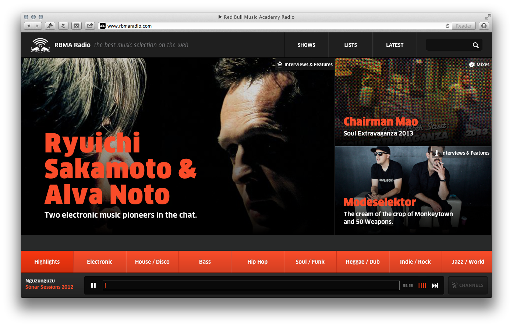
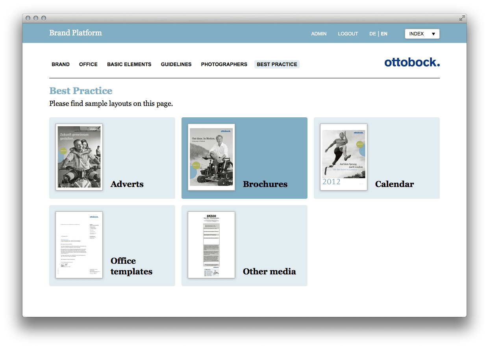

Hi, I’m a visual and interaction designer based in Berlin.
Marlene Schufferth
Projects
-
Red Bull Music Academy Radio
Redesign of RBMA Radio’s website and accompanying campaign
 -
Screenfeeder
Design for an App that displays social feeds on your iPhone, iPad or TV
-
mka Anwälte
Branding and webdesign for a law office located at the betahaus

-
Quaters Buildings
Branding, print and online design for a business real estate located in Amsterdam

-
Eurogate II
Branding print and online design for a business real estate located in Rotterdam

-
medx
Branding and user interface design for a medical diagnosis app tailored to the iPad

-
Red Bull Music Academy World Tour
Webdesign for RBMA’s world tour
-
Hering Berlin
Webdesign for Berlin’s porcellain manufacturer Hering

-
Otto Bock Brand Platform
Design for an internal brand management system including brand and design guidlines
 -
Diesel World
Design for an internal magazine, by and for employees

-
Velo Konzept
Design for an organization for biking

-
Friedrich-Ebert-Stiftung
Redesign for an alumni network
-
Pocket Wiki
Concept and design for a fictional wikipedia iphone client

Activities


Image: dribbble.com/allisongrayce
I’m currently working on my coding skills with treehouse’s great video tutorials.
About
Who I am?
My name is Marlene Schufferth. I’m a 25 year old visual and interaction designer living, loving, learning and working in Berlin since 6 years now.
After I finished my studies of visual communication at design akademie berlin in 2010, I focused on designing for digital media. I’ve been freelancing ever since, mainly for Edenspiekermann Berlin.
Working with Edenspiekermann’s great webteam gave me the opportunity to work for great clients such as Red Bull, Ableton, Carhartt, Gravis, Axel Springer, Hering Berlin, Otto Bock, Sentres, Tegut, Visit Berlin, MEAG and Bosch.
In the beginning of this year I co-founded 1kdims with the goal to realize own ideas and projects. More updates shortly at 1kdims.com.
How I work?
I’m used to working from concept over sketches to finished design in an agile process closely with front and backend developers. Hence I’m used to management tools like basecamp and pivotal. Further I am familiar with version control systems like git/github.
My tool of choice when it comes to design is keynote (read this post of my collegue Paul and you’re convinced too) but of course I equally master Adobe’s Phtotoshop, Illustrator and InDesign.
I have a good understanding of HTML and CSS as well as today’s web standards and trends which makes it easy to work with developers. My goal is however to be able to realize designs myself, that is why I am taking online courses with Treehouse.